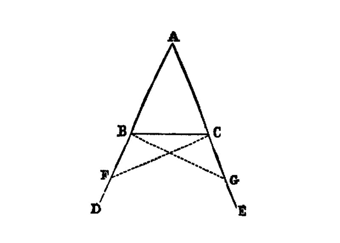

The base angles of an isosceles triangle are equal
{kind=link}
In isosceles triangles the angles at the base are equal to one another, and, if the equal straight [^I.5:1] lines be produced further, the angles under the base will be equal to one another.
===
Let ABC be an isosceles triangle having the side AB equal to the side AC; and let the straight lines BD, CE be produced further in a straight line with AB, AC. [I.post.2]
I say that the angle ABC is equal to the angle ACB, and the angle CBD to the angle BCE.
Let a point F be taken at random on BD; [^I.5:2] from AE the greater let AG be cut off equal to AF the less; [I.3] and let the straight lines FC, GB be joined. [I.post.1]
Then, since AF is equal to AG and AB to AC,
the two sides FA, AC are equal to the two sides GA, AB, respectively; [^I.5:3]
and they contain a common angle, the angle FAG.
Therefore the base FC is equal to the base GB, and the triangle AFC is equal to the triangle AGB,
and the remaining angles will be equal to the remaining angles respectively, namely those which the equal sides subtend,
that is, the angle ACF to the angle ABG, and the angle AFC to the angle AGB. [I.4]
And, since the whole AF is equal to the whole AG,
and in these AB is equal to AC, the remainder BF is equal to the remainder CG.
But FC was also proved equal to GB; therefore the two sides BF, FC are equal to the two sides CG, GB respectively; and the angle BFC is equal to the angle CGB,
while the base BC is common to them; [^I.5:4]
therefore the triangle BFC is also equal to the triangle CGB, and the remaining angles will be equal to the remaining angles respectively, namely those which the equal sides subtend; - therefore the angle FBC is equal to the angle GCB, and the angle BCF to the angle CBG.
Accordingly, since the whole angle ABG was proved equal to the angle ACF,
and in these the angle CBG is equal to the angle BCF,
the remaining angle ABC is equal to the remaining angle ACB;
and they are at the base of the triangle ABC.
But the angle FBC was also proved equal to the angle GCB;
and they are under the base.
Therefore etc.
[^I.5:5]
[I.1]: /elem.1.1 “Book 1 - Proposition 1” [I.3]: /elem.1.3 “Book 1 - Proposition 3” [I.post.1]: /elem.1.post.1 “Book 1 - Postulate 1” [I.post.2]: /elem.1.post.2 “Book 1 - Postulate 2”
[references] graph BT
I_5[ I.5 ]:::prop; click I_5 “/elem.1.5” “Book I Proposition 5”;
%%%% dependencies
I_1[ I.1 ]:::prop; click I_1 “/elem.1.1” “Book I Proposition 1”;
I_3[ I.3 ]:::prop; click I_3 “/elem.1.3” “Book I Proposition 3”;
I_post1( I.post.1 ):::post; click I_post1 “/elem.1.post.1” “Book I Postulate 1”;
I_post2( I.post.2 ):::post; click I_post2 “/elem.1.post.2” “Book I Postulate 2”;
%%%% links
I_5 –> I_1 I_5 –> I_3 I_5 –> I_post1 I_5 –> I_post2
%%%% I_3 dependencies
I_2[ I.2 ]:::prop; click I_2 “/elem.1.2” “Book I Proposition 2”;
I_post3( I.ax.3 ):::post; click I_post3 “/elem.1.post.3” “Book I Postulate 3”;
I_def15( I.def.15 ):::def; click I_def15 “/elem.1.def.15” “Book I Definition 15”;
I_cn1( I.cn.1 ):::cn; click I_cn1 “/elem.1.c.n.1” “Book I Common Notion 1”;
%%%% I_3 links
I_3 –> I_2 I_3 –> I_post3 I_3 –> I_def15 I_3 –> I_cn1
%%%% I_2 dependencies
I_1[ I.1 ]:::prop; click I_1 “/elem.1.1” “Book I Proposition 1”;
I_post1( I.post.1 ):::post; click I_post1 “/elem.1.post.1” “Book I Postulate 1”;
I_post2( I.post.2 ):::post; click I_post2 “/elem.1.post.2” “Book I Postulate 2”;
I_post3( I.post.3 ):::post; click I_post3 “/elem.1.post.3” “Book I Postulate 3”;
I_def15( I.def.15 ):::def; click I_def15 “/elem.1.def.15” “Book I Definition 15”;
%%%% I_2 links
I_2 –> I_1 I_2 –> I_post1 I_2 –> I_post2 I_2 –> I_post3 I_2 –> I_def15
%%%% I_1 dependencies
I_post1( I.post.1 ):::post; click I_post1 “/elem.1.post.1” “Book I Postulate 1”;
I_post3( I.post.3 ):::post click I_post3 “/elem.1.post.3” “Book I Postulate 3”;
I_def15( I.def.15 ):::def click I_def15 “/elem.1.def.15” “Book I Definition 15”;
I_cn1( I.c.n.1 ):::cn click I_cn1 “/elem.1.c.n.1” “Book I Common Notion 1”;
%%%% I_1 links
I_1 –> I_post1 I_1 –> I_post3 I_1 –> I_def15 I_1 –> I_cn1
[/references]
## Footnotes [^I.5:1]: the equal straight lines
(meaning the equal <em>sides</em>). Cf. note on the similar expression in <a href=”/elem.1.4”>Prop. 4</a>, lines 2, 3.
- [^I.5:2]: Let a point F be taken at random on BD
, <foreign lang=”greek”>εἰλήφθω ἐπὶ τῆς ΒΔ τυχὸν σημεῖον τὸ Ζ</foreign>, where <foreign lang=”greek”>τυχὸν σημεῖον</foreign>means <quote>a chance point.</quote>
- [^I.5:3]: the two sides FA, AC are equal to the two sides GA, AB respectively,
<foreign lang=”greek”>δύο αἱ ΖΑ, ΑΓ δυσὶ ταῖς ΗΑ, ΑΒ ἴσαι εἰσὶν ἑκατέρα ἑκατέρᾳ</foreign>. Here, and in numberless later passages, I have inserted the word <quote>sides</quote> for the reason given in the note on <a href=”/elem.1.1”>I. 1</a>, line 20. It would have been permissible to supply either <quote>straight lines</quote> or <quote>sides</quote> ; but on the whole <quote>sides</quote> seems to be more in accordance with the phraseology of <a href=”/elem.1.4”>I. 4</a>.
- [^I.5:4]: the base BC is common to them,
i.e., apparently, common to the <em>angles</em>, as the <foreign lang=”greek”>αὐτῶν</foreign> in <foreign lang=”greek”>βάσις αὐτῶν κοινὴ</foreign> can only refer to <foreign lang=”greek”>γωνία</foreign> and <foreign lang=”greek”>γωνίᾳ</foreign> preceding. Simson wrote <quote>and the base BC is common to the two triangles BFC, `CGB`</quote> ; Todhunter left out these words as being of no use and tending to perplex a beginner. But Euclid evidently chose to quote the conclusion of <a href=”/elem.1.4”>I. 4</a> exactly; the first phrase of that conclusion is that the bases (of the two triangles) are equal, and, as the equal bases are here the <em>same</em> base, Euclid naturally substitutes the word <quote>common</quote> for <quote>equal.</quote>
- [^I.5:5]: Q.E.D.
As <quote>(Being) what it was required to prove</quote> (or <quote>do</quote>) is somewhat long, I shall henceforth write the time-honoured <quote>Q. E. D.</quote> and <quote>Q. E. F.</quote> for <foreign lang=”greek”>ὅπερ ἔδει δεῖξαι</foreign> and <foreign lang=”greek”>ὅπερ ἔδει ποιῆσαι</foreign>.